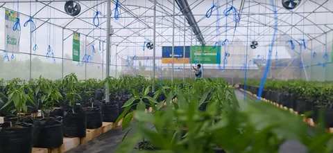
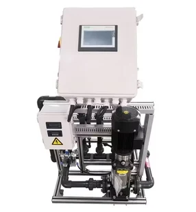
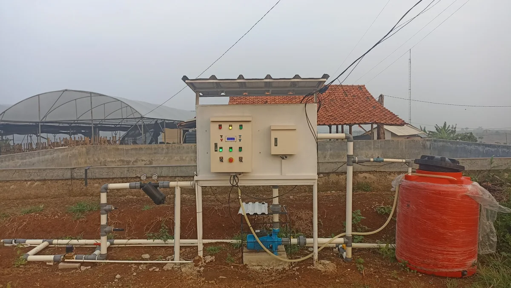
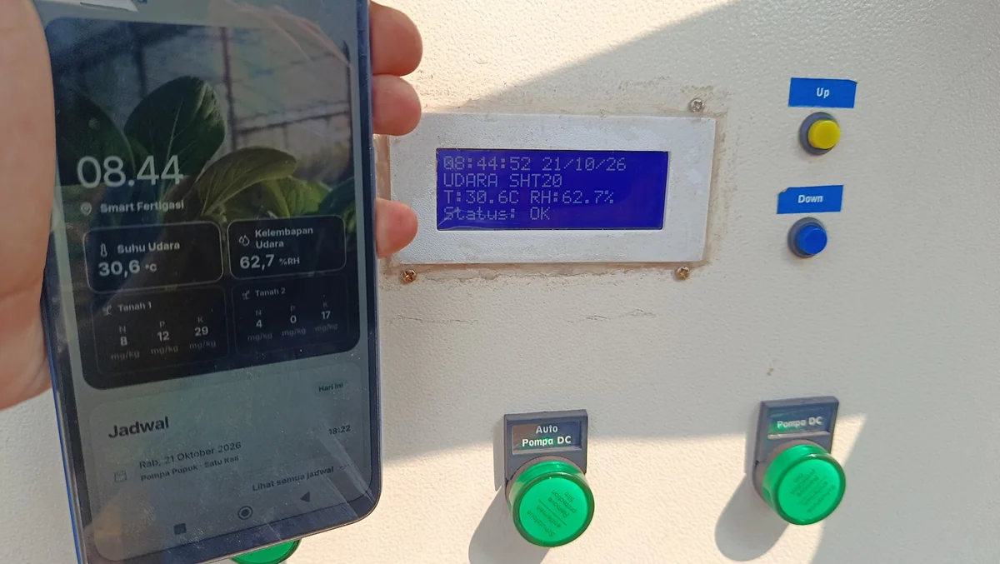
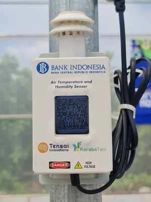
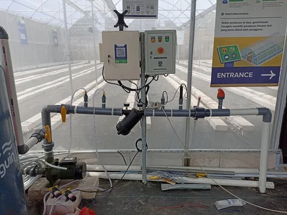
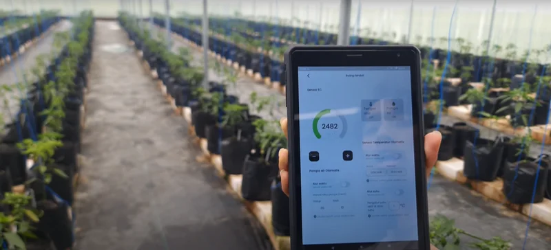

Pekerjaan manual berulang
Pengelola perlu mengukur, mencampur, dan menyesuaikan nutrisi secara rutin.
Auto Hidro Malang, Indonesia
Otomatiskan pencampuran nutrisi AB Mix dan pantau kondisi budidaya dari jarak jauh dengan Smart Dosing Hidroponik.
Lihat portofolioVisi & Misi
Kami ingin memelopori modernisasi pertanian di Indonesia melalui ekosistem hidroponik cerdas yang terintegrasi, mudah diakses, dan berkelanjutan.

Mengembangkan perangkat keras dan perangkat lunak berbasis IoT dan AI yang andal dan mudah digunakan.
Menyediakan perangkat otomasi, benih dan pupuk tersertifikasi, serta platform pemantauan dan analisis data.
Berbagi pengetahuan budidaya melalui webinar, konten digital, dan komunitas pengguna.
Mendampingi pengguna dan menawarkan kontrak servis untuk kebutuhan jangka panjang.
Bekerja sama dengan pemasok, distributor, lembaga riset, dan komunitas pertanian untuk memperkuat pasokan dan memvalidasi teknologi.
Tantangan Budidaya
Ketika skala budidaya bertambah, pemeriksaan dan penyesuaian nutrisi menyita lebih banyak waktu. Konsistensi makin penting bagi kebun yang memasok hotel, restoran, dan katering.
Pengelola perlu mengukur, mencampur, dan menyesuaikan nutrisi secara rutin.
Perubahan bisa terlewat di antara dua pengecekan, sehingga dosis dan jadwal panen lebih sulit dijaga.
Perlengkapan, panduan budidaya, dan bantuan teknis sering perlu dicari dari beberapa tempat.

Produk & Layanan
Satu unit untuk mencampur dan menyalurkan nutrisi AB Mix secara otomatis. Pantau data sensor, lihat riwayat, dan terima peringatan melalui platform yang terhubung ke cloud.
Rangka profil aluminium. Panel dengan layar monitor, kunci kontak, tombol darurat, lampu indikator, dan kenop pengaturan manual. Pompa, pipa PVC, katup, dan sensor mengatur aliran nutrisi.
Koneksi internet menyinkronkan data ke cloud untuk pemantauan real-time, riwayat dan analisis data, serta peringatan digital.
Paket cloud dan AI, penjualan benih serta perlengkapan, dan layanan instalasi, kalibrasi, serta pemeliharaan.
Target Pasar
Berbasis di Malang, Auto Hidro memulai dari Jawa Timur dengan sasaran pengembangan di Surabaya, Jakarta, dan Bandung.
Menyederhanakan perawatan hidroponik di rumah atau kebun komunitas.
Mengelola nutrisi dan memantau budidaya skala kecil hingga menengah.
Mendukung praktik budidaya, pembelajaran otomasi, dan riset terapan.
Mendukung kebun sendiri atau mitra budidaya untuk pasokan sayuran segar yang lebih konsisten.
Model Bisnis
Pelanggan dapat membeli perangkat dan memilih layanan tambahan sesuai kebutuhan operasionalnya.
Purwakarta, Jawa Barat
Instalasi fertigasi dengan panel kontrol, pompa, dan perpipaan. Dashboard menampilkan kondisi udara dan tanah serta jadwal pompa.


Mojokerto & Jombang, Jawa Timur
Dokumentasi penerapan Smart Dosing di greenhouse Mojokerto dan Jombang, meliputi pengaturan nutrisi, sensor lingkungan, dan pemantauan digital.


